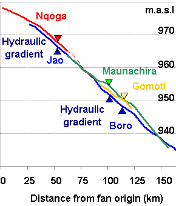

River channel elevation profile - water

The graph shows the water
elevation of major channels of the Okavango Delta. Water level calculation
was done from transects measured with GPS. The zero distance point is set
to the apex (topmost point) of the Delta. This point is were the Okavango
channel divides into several smaller channels. This "bifurcation" point
was identifed from from the Delta
geometry. As seen in the figure over a distance of 150 km water levels
are only falling 45 metres (1/3 of a permille). Most of the water from
the Okavango flows into Nqoga. Most water leaving the Delta flows with
Jao- Boro. But the Nqoga and Jao-Boro are not connected by an open channel.
Water is instead "filtered" through the papyrus and reed from Nqoga to
Jao-Boro. The driving force for this filtering is the hydraulic gradient
indicated in the figure above. The gradient is a result of accumulation
of material in the largest channels. The dense reed and payrus keeps the
water in the channels, even when the channel is higher than the surroundings.
Also from the Maunachira and the Gomoti channel water is filtering through
to the Jao-Boro. Over the last decades more and more water has filtered
through. Nqoga is a dying channel and will eventually cease to exists.
As Jao-Boro grown older it will also grow higher and water will filter
through to yet another channel, and a new cycle starts. New channels are
formed all the time, often in trails created by hippos and other animals.
Also note the two "bumps" on the Maunachira and Gomoti - you can see them
on the contur map as well. We believe they are formed by tectonic activity
(earth movements).